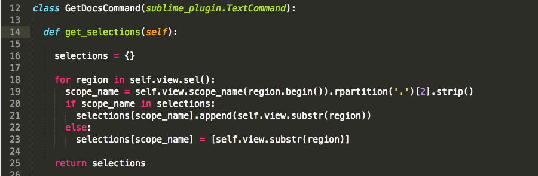
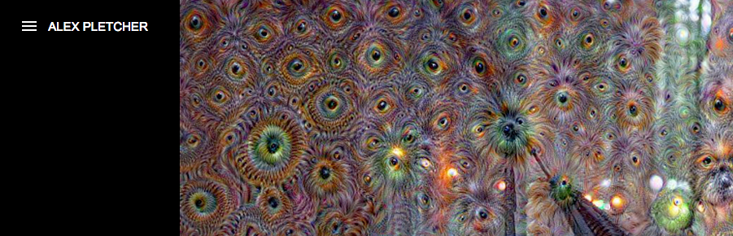
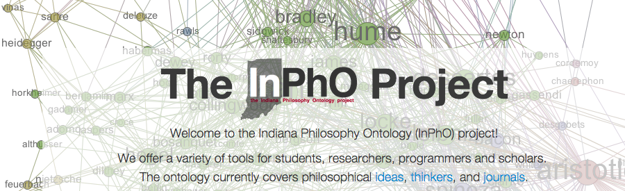

ORS Inc
Software Engineer
Description: I have worked in a wide variety of roles as a full stack developer at ORS.
Skills: PHP, JavaScript, HTML, CSS (SASS and Compass), MySQL, Git
ICD 10 Mapping Tool
Description: Designed and created from the ground up an ICD 9 to ICD 10 diagnosis code mapping tool.
Skills: PHP, JavaScript, CSS, MySQL, Git
Personal Projects

GetDocs
Description: This is a Sublime package that allows you to quickly find documentation for the highlighted selections in Sublime Text 3.
Skills: Python 3, Sublime Text 3, Git

AlexPletcher.com
Description: Updated 500px Theme to utilize mobile and keyboard events and implemented AJAX techniques to provide a smoother viewing experience.
Skills: JavaScript (jQuery), AJAX, Liquid Templates
Indiana University

INPHO Project Programmer
Description: During my time with this project, I worked on creating Mustache templates for formatting bibliographic citations.
Skills: JavaScript (jQuery), {{ Mustache }}
Research Assistant
Description: As a research assistant in Rob Goldstone's Percepts and Concepts Laboratory at Indiana University, I worked on coding a psychology expiriment using Python.
Skills: Python, Pygame, NumPy, PyPsyExp